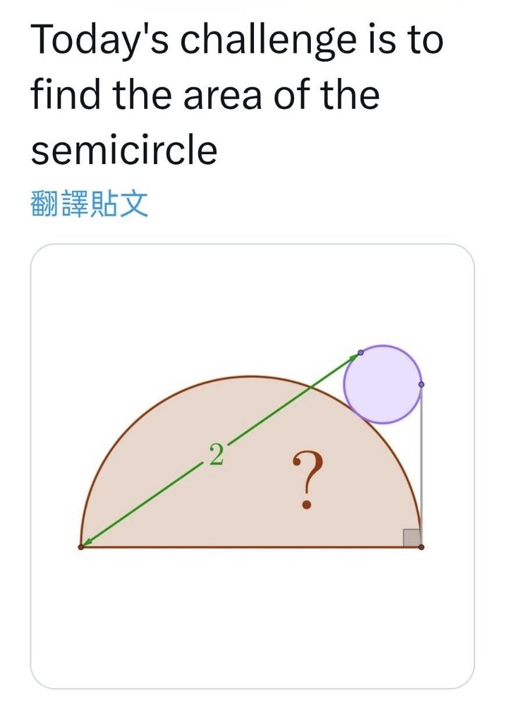

要考科學班的同學試試看
FA00教你秒殺此題‼️
昨天同學問了獵豹老師一道幾何趣題，。
而這恰好可以用獵豹FA00課程，宗翰老師的「專家模式」第一堂開場十分鐘的「極端化分析」，兩秒看出 「半圓直徑恰好等於2」,而猜出答案：pi/2
再循著答案的暗示，很容易用「切割線原理與直角三角形的相似關係」寫出完整的證明。
🔸獵豹【FA00課程】
🔴資優生最值得的數學課程
🔵真正提升數學能力的課程
🟠一個影響一生的數學課程
🟣面向「升學/科學班/競賽」的全方位課程
🟢揭密數學高手的『底層邏輯/頂層思維/上帝視角』
科學班的備考聖經 【獵豹2025 新版 FA00】
七大頂尖名師壓箱作 精心籌劃 隆重登場‼️
🔸「2025/07獵豹小學數學 3~6年級P系列 (上學期) 課程 開跑了!」🤩
🔸『2025/07獵豹國中數學J/FJ課程開跑！』
🔸『2025/07 獵豹S101高一(上)、S111高二(上)』開跑!』👍
🔸2025/07暑假:獵豹 GGB1、GGB2 課程開跑！🤩
